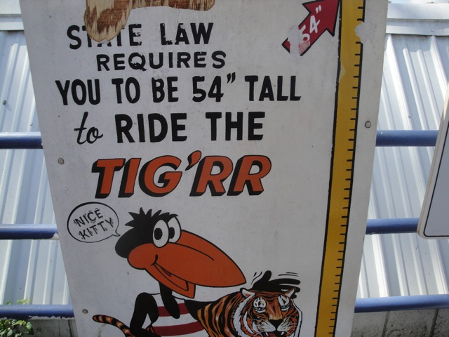

Tig'rr Coaster Review
We're here at Indiana Beach. Today's ride we'll be reviewing for you is the Tig'rr Coaster. After getting in the trains and buckling the seatbelts, we're off. Seriously, this ride only has a seatbelt. Which is pretty freaking cool. You go around a turn and begin to climb the lifthill. It has a nice view, as do all the coasters at Indiana Beach, and now we're at the top. We get a really nice view of Cornball Express as we go around a big turn slowly. We start to lean down the first drop and then BAM!!! YOU ARE OFF!!! This drop picks up speed so well its almost like a freaking launch. And right after that, we go around a tight curve, which while does have some ok laterals, really just stimulates the speed that we have right now. It feels like we're going at least 50 mph faster than what we're probably really going. We then go up a really non steep hill that unfortunetly takes away most of our speed. How lame. =( We then go around another not very fast turn before dipping down before we rise up and go through another slow slightly banked turn. And after that, its another dip to the ground and rising up into slow turns. Now its cool cause we get some headchoppers due to the rest of the ride being right above us. After that turn around, we go down another small drop that goes straight into a ground hugging curve, just like the first drop. It lasts for a while and gives us a good sense of speed as we rush close to the ground. But then it goes back to its lame old pattern. Rise up, dip back down. Rise up, slow turn. Theres one last drop and one last small turn before the ride is over. And honestly, I really like it. Its a really fun small little coaster. The open seats and only seatbelt make it feel faster, and of course, that first drop and turn kicks major ass. And while it may have been a common ride in the 70s, nowadays, its actually kind of rare. Which is sad because its a really fun ride. Definetly check it out at Indiana Beach.
7/10
Location: Indiana Beach
Opened: 1984
Built by: Schwarzkoph
Last Ridden: August 12, 2010
Tig'rr Coaster Photos


Home
|